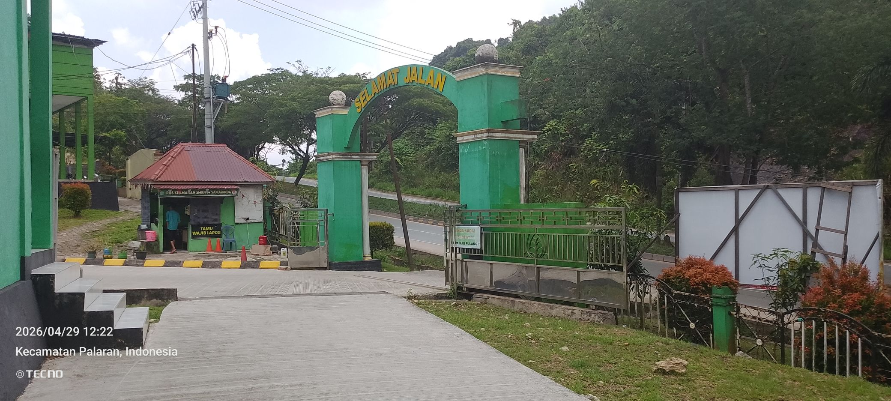
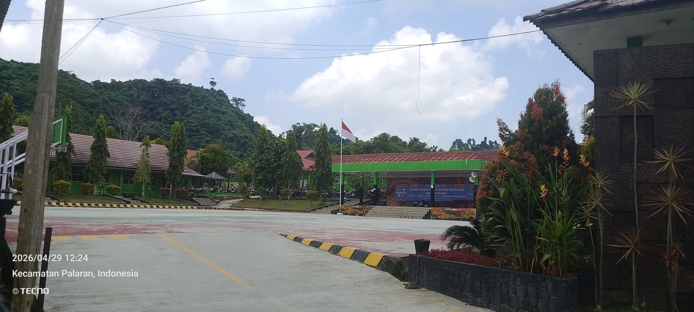

SMK Pusat Keunggulan
SMKN 14 SAMARINDA
" BerTAKWA "
VISI
MISI
Menyelenggarakan program pembinaan karakter profil pelajar Pancasila (Beriman dan bertaqwa kepada Tuhan YME, mandiri, kreatif, berkebhinekaan global, gotong royong dan bernalar kritis) melalui kegiatan intrakurikuler, kokurikuler dan ekstrakurikuler.
Menyelenggarakan pembelajaran yang berpihak pada murid dan menyenangkan.
Mewujudkan lingkungan belajar yang ramah anak.
Menyelenggarakan kerjasama dengan IDUKA dalam pembelajaran berbasis Industry/factory learning dan program sekolah pusat keunggulan.
Mengembangkan sistem informasi manajemen sekolah berbasis teknologi.
Meningkatkan kompetensi pendidik dan tenaga kependidikan.
Mengoptimalkan peran Bursa Kerja Khusus dalam memberikan informasi terkait prospek kerja IKN.
Menyelenggarakan sertifikasi kompetensi murid yang sesuai dengan KKNI.
Menyelenggarakan pembelajaran berbasis project.
Menyelenggarakan pembelajaran kewirausahaan dengan menghadirkan pelaku usaha.